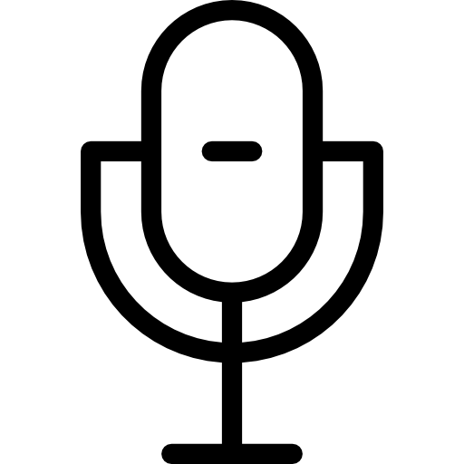

Comunicação esse é nosso objetivo!
Topp FM - 87,9 - Desde de 19XX o morador de Santa Juliana e redondezas pode contar com a melhor programação musical, informações e os melhores comunicadores da Região! A Topp FM tem como meta além de proporcionar entretenimento, a prestação de serviços à toda a comunidade.

Participação do ouvinte
De uma maneira bem democrática e dinâmica, O ouvinte Topp participa e indica sua música durante toda a nossa programação.
Prestação de serviços
Auxílio à comunidade através das ondas do rádio sintonizando 87,9 e/ou acessando nosso site, os moradores da cidade e regiões vizinhas podem contar com nossa equipe para trazer diversão, informações atualizadas e orientações.